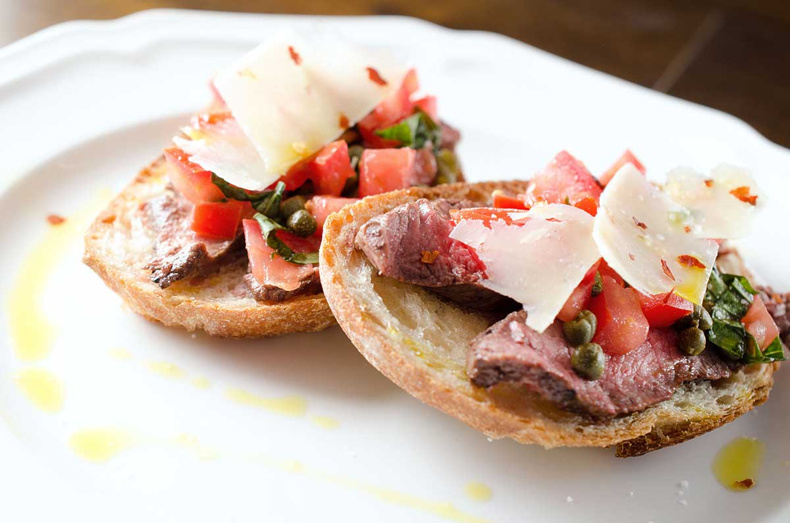

Bruschetta Recipe

Description
Bringing life to a party is easy as long as you bring Bruschetta with you.
This recipe has been a constant hit in my own home, as well as many others.
Ingredients
- ▢2 roma tomatoes seeded and diced
- ▢6 basil leaves chopped
- ▢2 teaspoons non-peril capers
- ▢6-8 slices crusty bread
- ▢1 clove garlic
- ▢1/4 pound thinly sliced grilled steak
- ▢olive oil
- ▢Parmesan cheese
- ▢crushed red peppers optional
Steps
- Combine tomatoes, basil and capers together in a bowl. Let set at room temperature for at least 30 minutes.
- When ready, preheat broiler. Place bread slices under the broiler for 1 - 2 minutes or until they start to turn golden. Remove from oven. Rub with garlic clove.
- Place 1 - 2 pieces of thinly sliced steak on top of toasted bread. Spoon tomato mixture over the top.
- Use a vegetable peeler to make parmesan cheese shavings. Place 1 - 2 shavings on top of the tomato mixture. Sprinkle with crushed red peppers if desired and serve.